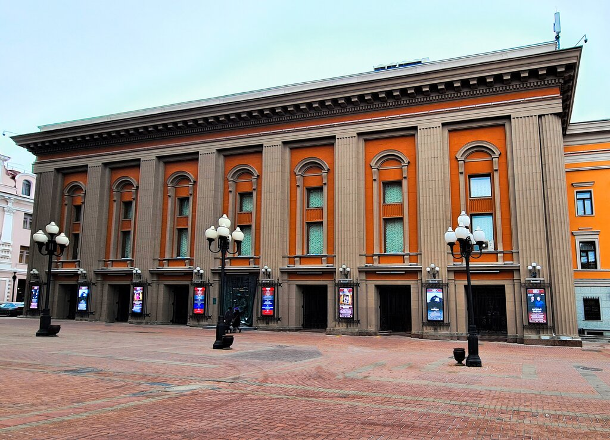
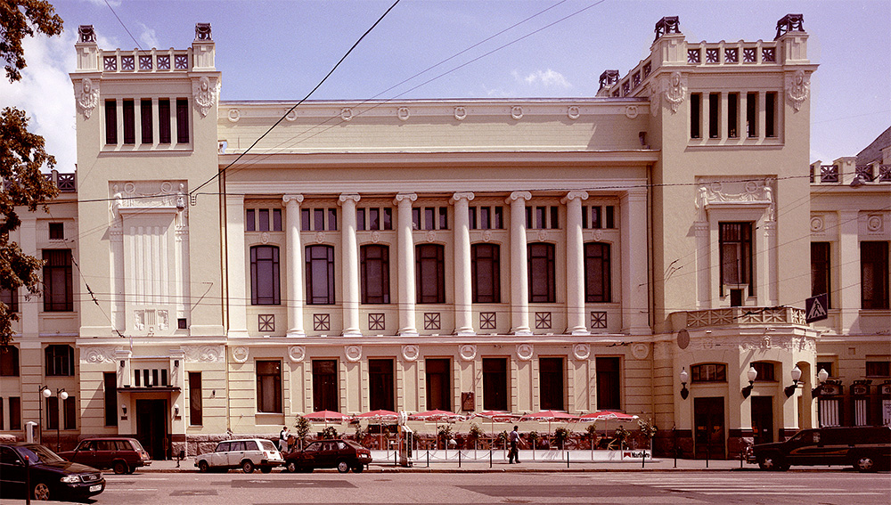
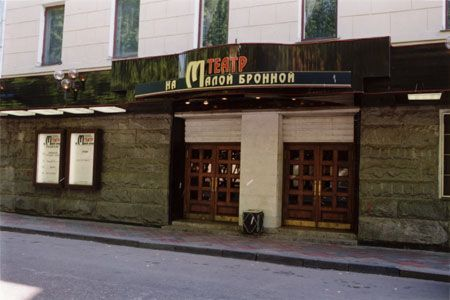
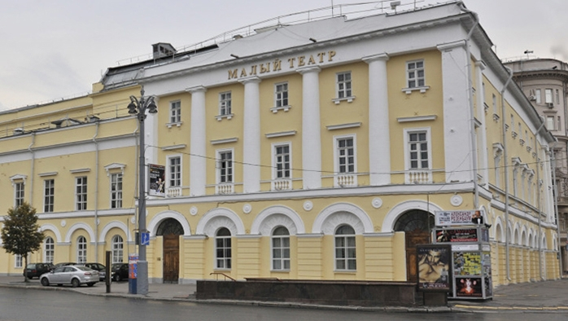
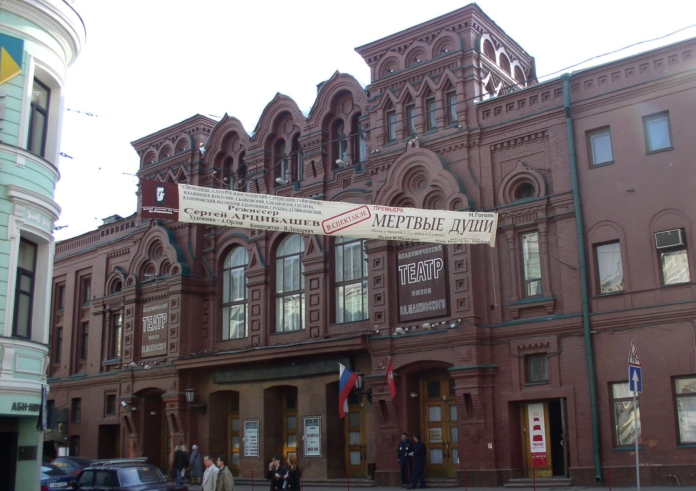
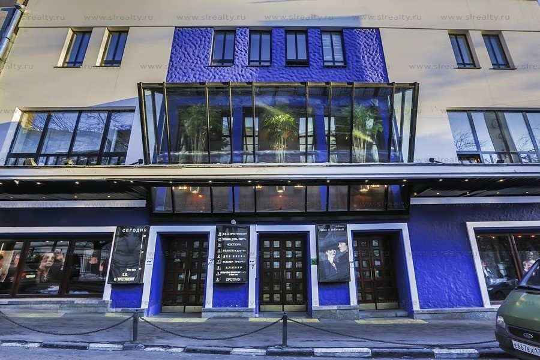
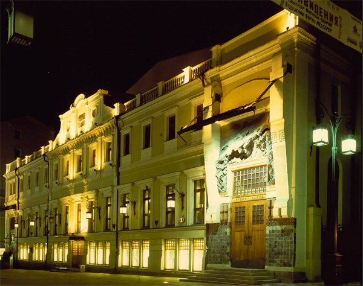
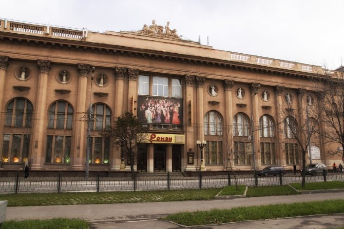
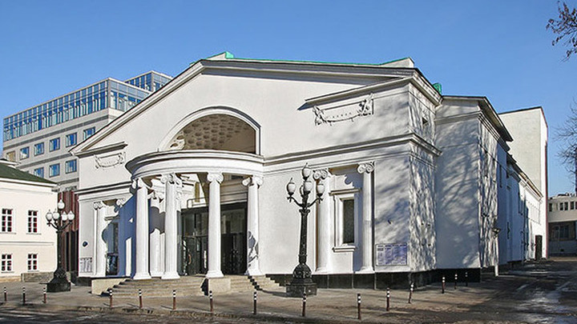

Театры в Москве
О нас
На главную
Перейти к:
Б
В
Л
М
Р
С
Большой театр
Государственный академический Большой театр России (ГАБТ), или просто Большой театр — один из крупнейших в России и один из самых значительных в мире театров оперы и балета. Изначально театр был частным, но с 1794 стал казённым, составляющим вместе с Малым единую московскую труппу императорских театров...

Театр Вахтангова
Государственный академический театр имени Евгения Вахтангова — драматический театр в Москве. Уже в 1913 году группа студентов организовала Студенческую драматическую студию, руководителем которой стал Вахтангов, бывший режиссёром Московского Художественного театра.

Театр Ленком
Российский государственный драматический театр, расположенный в Тверском районе города Москвы. В 1927 году по инициативе Московского комсомола был основан Центральный Театр рабочей молодёжи (ТРАМ). Открытие прошло 1 октября. В него приняли участников заводских и районных театров, а также...

Театр на Малой Бронной
Драматический театр Москвы. Изначально театр располагался в здании на улице Спартаковской, дом 26, но в 1962 году Московский драматический театр переехал в здание на Малой Бронной, дом 4. В 1968 году театр получил современное название. На 2019 год в репертуаре преобладают спектакли, основанные...

Малый театр
Государственный академический Малый театр России — драматический театр в Москве. Малый театр — один из старейших театров России. Его труппа была создана при Московском университете в 1756 году, сразу после известного указа Императрицы Елизаветы Петровны, ознаменовавшего...

Театр им. Маяковского
Один из самых старых драматических театров Москвы. Основу репертуара составляют спектакли, поставленные по мотивам произведений русской классической литературы. Современное название и посвящение Владимиру Маяковскому театр получил в 1954 году, а через десять лет ему присвоили...

МТЮЗ
Первый государственный театр для детей, в 1941 году объединён с ещё одним московским ТЮЗом. В 1970 году награждён Орденом Трудового Красного Знамени, а в 80-м получил Премию Ленинского комсомола. Первым показанным в 1920 году спектаклем был «Маугли». На тот момент зрительный зал вмещал 330 человек...

МХТ
Московский Художественный театр — драматический театр, основанный Константином Сергеевичем Станиславским и Владимиром Ивановичем Немировичем-Данченко. В 1987 году разделился на два театра, взявших себе официальные наименования: Московский Художественный академический...

Театр Ромэн
Московский музыкально-драматический театр. В его репертуар входят постановки на известные литературные произведения. Авторами сценариев зачастую являются сами актёры. 6 декабря 1931 года «Ромэн» получил статус профессионального театра. Вскоре был показан трёхактный...

Театр Cовременник
Театр основан в 1956 году группой молодых актёров — выпускников Школы-студии МХАТ. Актёры собирались на добровольных началах.Изначально актёрская студия взяла название «Студия молодых актёров», которое отражало демократический дух группы. Создание современного молодёжного театра стало...